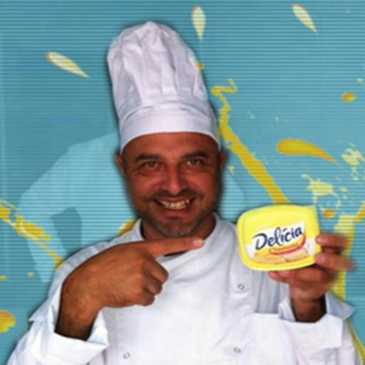

Sobre Nós
Empadas Deliciosas começou como um pequeno negócio familiar em 2000, focado em trazer melhores empadas para nossos clientes. Utilizamos ingredientes frescos e receitas tradicionais passadas de geração a geração.
Nossa missão é oferecer empadas saborosas e de alta qualidade, garantindo a satisfação de nossos clientes e mantendo a tradição culinária que nos define.
Nosso Time

Fundador
Paulo

Chef
Jailson
Nossa História
Desde nossa inauguração, conquistamos uma base de clientes fiéis e expandimos nossas operações para várias localidades. Continuamos a inovar e aperfeiçoar nossas receitas para oferecer sempre o melhor.
Nossos Valores
- Qualidade: Utilizamos apenas ingredientes frescos e selecionados.
- Tradição: Respeitamos as receitas tradicionais e os métodos de preparo.
- Satisfação do Cliente: Nosso Objetivo é proporcionar uma experiência gastronômica memorável.
- Inovação: Estamos sempre em busca de novas receitas e sabores